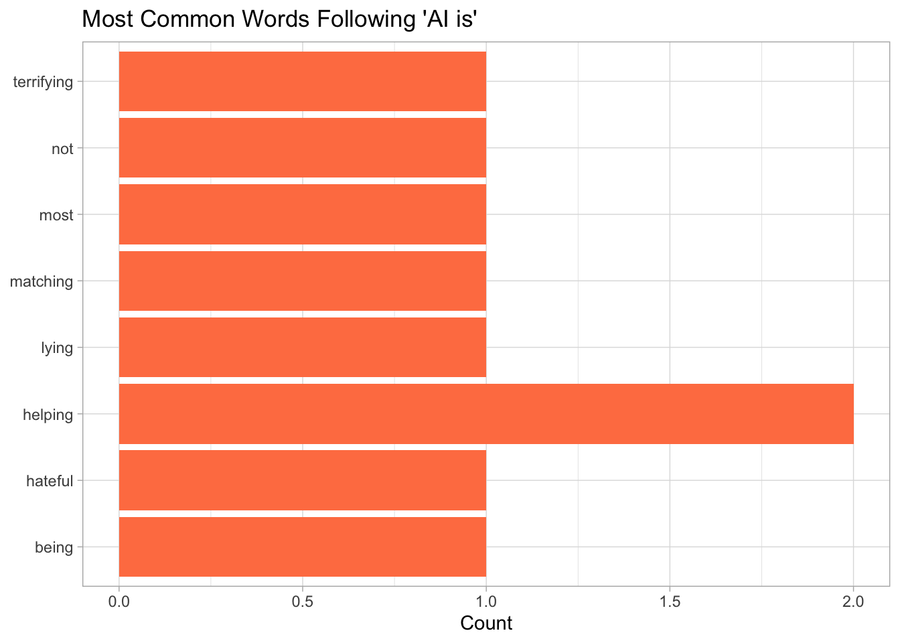

Show code
library(RTextTools)
library(tidyverse)
library(stringr)
library(readr)
library(lubridate)
library(data.table)
articles <- read.csv("bbc_news.csv")Elene Barbakadze
October 8, 2025
For the purpose of analysis, I compiled a list of AI-related terms to make the search process easier.
The titles in the dataset were converted to lowercase, and all AI-related terms from the original list were replaced with the placeholder “ai” to simplify analysis. In this context, “ai” represents any term referring to artificial intelligence (e.g., machine learning, chatgpt, neural networks). Additionally, the publication dates were converted from character strings to date variables for easier grouping.
articles <- articles |>
mutate(title = as.character(title),
lower_title = str_to_lower(title),
lower_title = str_replace_all(lower_title, ai_terms, "ai"),
topic_ai = str_detect(lower_title, "\\bai\\b"))
articles <- articles |>
mutate(clean_date = str_replace(pubDate, "^[A-Za-z]{3},\\s*", ""),
clean_date = str_replace(clean_date, "\\s*GMT$", ""),
clean_date = dmy_hms(clean_date),
year_month = format(clean_date, "%Y-%m"))https://www.kaggle.com/datasets/bhavikjikadara/bbc-news-article
articles_month <- articles |>
filter(topic_ai) |>
group_by(year_month)|>
summarize(number = n()) |>
mutate(year_month = as.Date(paste0(year_month, "-01")))
articles_month |>
ggplot(aes(x = year_month, y = number, color = number)) +
geom_line(size = 1.2)+
geom_point(color = "#FFC107", size = 2.5)+
scale_color_gradient(low = "#FFF59D", high = "#E53935")+
labs(title = "AI Mentions by Month",
subtitle = "Tracking the rise of AI-related articles over time",
x = NULL,
y = "Number of AI Articles") +
scale_x_date(date_labels = "%b %Y", date_breaks = "5 months") +
theme_light()year_month <- articles |>
mutate(yr = year(clean_date), mnth = month(clean_date)) |>
group_by(yr, mnth) |>
summarise(ai_mentions = sum(topic_ai))
year_month |>
filter(yr>2021) |>
mutate(mnth = factor(mnth, levels = 1:12, labels = month.abb)) |>
ggplot(aes(x = mnth, y = yr, fill = ai_mentions)) +
geom_tile() +
scale_fill_gradient(low = "#FFF59D", high = "#E53935") +
labs(title = "Heatmap of AI mentions by year and month", x = "Month", y = "Year", fill = "Count") +
theme_light()The line graph and the Heatmap show the number of BBC articles mentioning AI-related terms in their titles from May 2022 to January 2024. The data reveals an initial rise in mentions around April and May 2023, followed by a second peak in November 2023. The first surge corresponds to the public release of GPT-4 and the growing media attention surrounding generative AI tools such as ChatGPT and Microsoft Copilot. The later spike in November aligns with OpenAI’s Dev Day announcements and the coverage of the company’s leadership changes. Overall, 2023 had the highest number of AI-related articles in the dataset, indicating a significant rise of media attention.
articles_word <- articles |>
filter(topic_ai) |>
mutate(ai_word = str_extract(lower_title, "(?<=ai )\\w+")) |>
filter(!is.na(ai_word)) |>
group_by(ai_word) |>
summarize(number_of_mentions = n()) |>
select(ai_word, number_of_mentions) |>
arrange(desc(number_of_mentions)) |>
slice_head(n = 15)
articles_adj <- articles |>
filter(topic_ai) |>
mutate(ai_word = str_extract(lower_title, "(?<=ai is )\\w+")) |>
filter(!is.na(ai_word)) |>
group_by(ai_word) |>
summarize(number_of_mentions = n()) |>
select(ai_word, number_of_mentions) |>
arrange(desc(number_of_mentions))
To explore how AI is used in context, I created two graphs showing the words that most frequently follow the placeholder term “ai”, and the words that follow the phrase “ai is”. I filtered the dataset to include only titles containing AI-related terms and used lookarounds to extract the surrounding words.
The first graph shows that the most common words following ai are “is,” “to,” “could,” and “in.” This pattern makes sense given the normal sentence structures in article titles, where ai often acts as a subject followed by verbs or prepositions.
The second graph focuses on words that appear after “ai is.” The most frequent one is “helping” (appearing twice), followed by single occurrences of words like “terrifying,” “not,” “most,” “matching,” “lying,” “hateful,” and “being.” It’s interesting that most of the adjectives carry a negative tone, reflecting the media narratives around AI, which emphasize fear, uncertainty, or ethical concerns over generative AI
Citation:
BBC News Articles. (n.d.). Kaggle. Retrieved October 8, 2025, from https://www.kaggle.com/datasets/bhavikjikadara/bbc-news-articles
https://www.kaggle.com/datasets/bhavikjikadara/bbc-news-articles: R data source